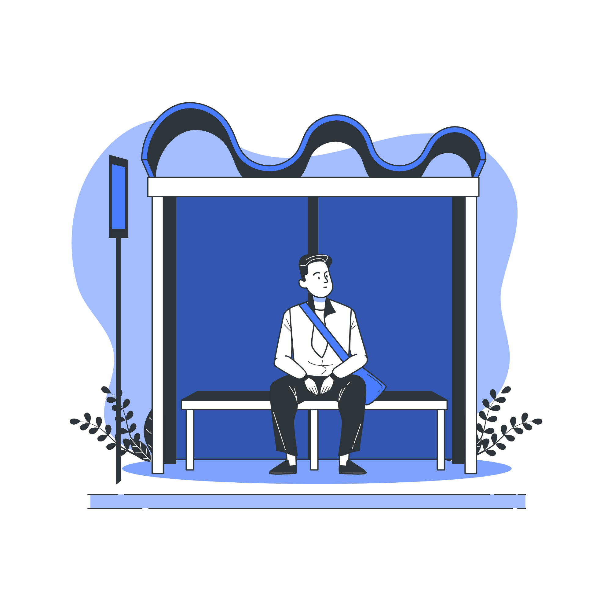

Você já ficou esperando no ponto um ônibus, e quando ele chegou o mesmo não tinha nenhuma acessibilidade? Nosso objetivo é reunir, num site, os ônibus que possuem acessibilidade garantida, para você que é PCD e tem essa dificuldade todos os dias.
FacilitaBus
Pensado em você, PCD que utiliza do transporte público!